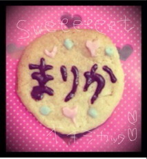
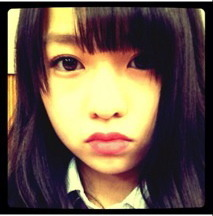
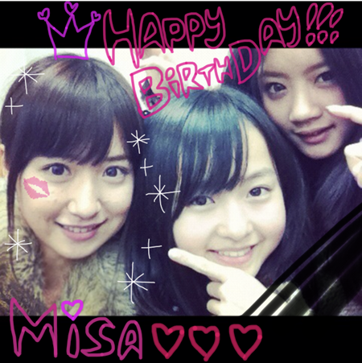
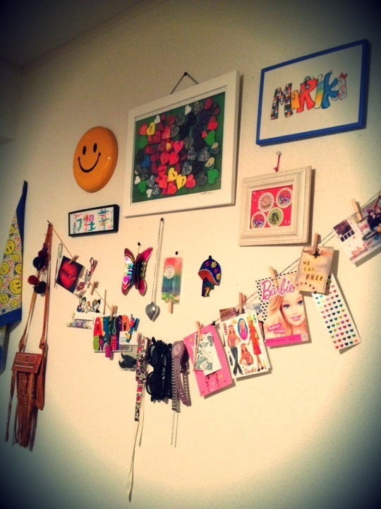
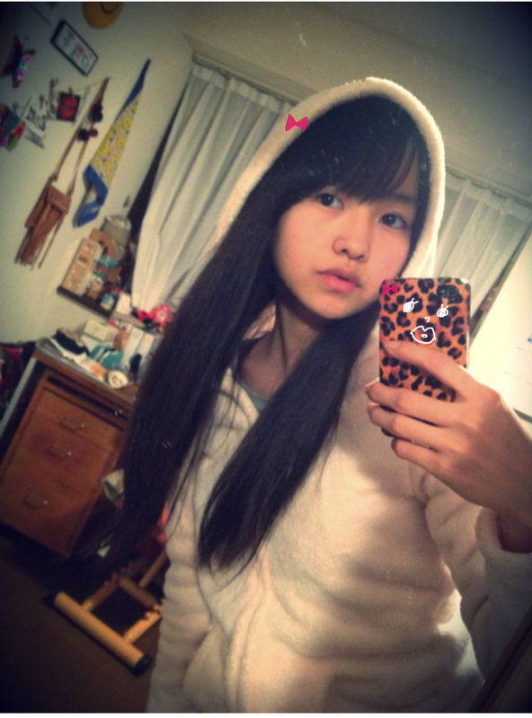

2012/0111Wed49回目*marika
こんばんは:D♡
ベビたんよ。まりかよ。
いつも読んでくださってる方、
初めて読んでくださった方、
コメントしてくださった方、
ありがとうございます。
みなさん、本当にあったかい方ばかりで
コメントを読んだとき、泣きました。
こんなに応援してくださる方が
私には沢山いるんだ。
と実感しました。
沢山ありがとう。
いつだって最高の笑顔で＊
私ね、
本当にみなさんのことだいすきです。
♡♡♡
....................................
・こんな髪型にしてみたいとかある？
猫耳ヘアとか!!
アシンメトリーなヘアとか。
モードなファッションショーで
モデルさんがしてるヘアとか。
いろいろやってみたいです^^
・初夢は見た？
それが見てないんですよ...
あっ、でももしかしたら見たのかもな><
忘れちった。
・今までショートとか
セミロングにしたことはある？
小5の時、ショートでした。
ベリーショートまではいかないけど
いろんな長さの時ありました笑
・『なんでそんなに可愛いの？』←
!!!!!!!
ええぇぇぇえ////
こりゃはずかしい。
.....ありがとうございます><
て、答えになってな----い←
・まりかちゃんって高1？
高１高１!!
そっか、うん。
まだ中学生に見えるのかなぁ笑
最近大人っぽいって言われ始めてたから
ちょいと私調子のってたね...
・髪のばしてるの？
のばしているならばどのくらいが目標？
もう長いから、
この長さキープしようかな^^*
・新しい髪型に挑戦したりするの？
このまままた似た感じでカットするのかな？
長い方がいろいろアレンジできるから
しばらくはこのままかなぁ。
でも前髪は変えるかも*!!
・まりちゃんって呼んでもいいですか？
呼んで呼んで♡
うれしいです〜
・いくちゃん、まりちゃんの二人を
推すのって有りですか？
推してくださるだけで
うれしいです><
でも、一推しになってもらえるように
努力します=33
・巻きサイドの画像お願いします（笑）
はい!!
遅くて本当にすみません;(
もうちょいまってて!
・椎名林檎の好きな曲は何？
紅白の2曲、
だいすきになりました♡
・なにか写真を撮るために勉強とかしてるの？
雑誌とか、海外のブログとかいろいろ見て
研究してます♪
遅くなりました><
またいろいろお答えしますっ。
...................................
Lessonありました^^
ダンスって楽しいな。
楽しんでしまうから
ひきしめて頑張らないけないな**
そういえば。
口内炎でおっきいのできてしまって
めっっっちゃ痛いなうです。
それでその痛さ?を知ってほしくて
メンバーに
「私ここに口内炎できて、めっちゃ痛いの」
と言いまくってました...
みんな困ってた。←
みんなごめんね; ;
治ったらちゃんと報告しなきゃ。ね。

みゅうみゅうから
クッキーいただきました ♡
めっちゃかわゆい!!
おいしかったよ。ありがとう:D
最近本とか雑誌沢山買いました。
装苑はファッションの勉強になる。
海外のスナップもよく見るの^^
風邪の状態も治ってきたような
気がします。
口内炎は治ってません。
みなさんは風邪、ひいてないですか??
今日も明日もあったかくしてくださいね。
最近本当に寒いですね><
コメントとかお手紙読んでたから
心ぽかぽかしてます＊
からだが寒いのを忘れちゃうくらい
ぽかぽかです^^*えへ
お手紙からの質問、
まだお答えできていません;(
ごめんなさい。
質問回答最近さぼってばかりで...泣
でもなるべく毎日更新する＊
今日もみなさん一緒に頑張りましょう:)*


LOVE
ベビたん*****bA by marika
2012/0109Mon48回目*marika
いつも読んでくださってる方、
初めて読んでくださった方、
コメントしてくださった方、
ありがとうございます！
まりかです。
昨日も朝から
お仕事がありました。
みんなお疲れ様＊
昨日の乃木どこは
見ていただけましたか⁇
デビュー選抜発表でした。
私を推してくださってるみなさん、
私は今回、選抜メンバーには選ばれませんでした。
本当に悔しいです。
泣きたくなくても、
涙がボロボロ出てきて、
ずっと止まりませんでした。
それと同時に
自分はちゃんと自分を表現できていないんだ。
自分を出していないんだ。
何も足りていないんだ。
と今までのことを思い返しながら、
考えました。
今日、放送を見て、あらためて
いろいろなことを考えています。
やっぱり悔しくて。
でも、悔しい悔しいばかりいっても
変わらないから。
努力するしかないです。
この前のAKBさんの特集を録画したのも見て、
沢山のことを感じました。
私たちは、まだ足元にも及びません。
AKBさんが5年間どれだけ、
頑張ってきたのか。
私たちは、これからAKBさんが経験したことの
半分も経験するかわかりません。
乃木坂は最初から環境が恵まれています。
だから、私たちはAKBさんの倍以上に、
もっとストイックにならないといけないと感じました。
初心を忘れません。
私を応援してくださっているみなさん、
本当に、本当に、
私、本当に努力して、
みなさんに良い報告ができるようになります。
絶対に。
絶対約束します。
どんなに辛くてもみなさんがいてくれます。
ちゃんと感謝して、
それを届けられるように、
裏切りません。
私の背中を押してください。
ダンスも全部ちゃんと覚えて、
しっかり練習して、
アンダーの役割を精一杯やります。
追いかけていきます。
もし、メンバーで分からなかったら
引っ張っていきます。
誰にも負けない気持ちで、
上へ上へ
上っていきます。
乃木坂46、デビューに向け
再スタートします。
頑張ります‼
応援よろしくお願いします。
ベビたん*****bA by marika
2012/0107Sat47回目*marika
{kind=link}
{kind=link}
ケータイから更新~☆
いつも読んでくださってる方、
初めて読んでくださった方、
コメントしてくださった方、
ありがとうございます！
まりかです。
5日の2012年初のイベント、
来てくださった方、
ありがとうございました ♡♡
おしるこおいしかった⁇
メンバーみんなずっと
食べたい食べたいて
言ってたの。
イベント終わったあとみんなで
食べました^^*
ん、おいしかった♡
久しぶりに乃木坂でのイベントで、
オーディションの時を
思い出していました ＊
あの時この場所で
緊張しながら自己紹介してたなって。
私の今年の抱負
『見た目はベビー中身はレディー』
...女性らしく、
大人な考えができるように、
と書き初めで発表しました‼
緊張してグダグダ発表に
なってしまいました><
何言ってるかわからなかったかな…
↑こんなところ、なおしていきます‼
しっかり言いたいことが言えるように
まとめられるように‼
そして、
みゅうみゅう。
おかえりなさい!***
Lessonの時、
誰よりも努力してるみゅうみゅう。
みゅうみゅうがどれだけ頑張ってるか、
メンバーみんな知ってます。
みゅうみゅうの挨拶の時、
私は泣いてしました。
メンバー全員で頑張っていこうと
思いました。
私はみゅうみゅうが
帰ってきたことが本当に嬉しいです。
これからも
坂を全員で上がっていきます。
どんなに 辛くても
手を繋いで
頑張っていきます。
*******************
しゃしん☆
なんでまりか、正座してんの？
て思った方‼
私ね、
最近ずっとゆる巻きばっかりやったから
久しぶりにストレートにしたら、
…なんか和っぽくなった!
ので、正座して撮ってもらった笑
そしたら後ろで
ちはるとらりんとひめかが写り込んでた~笑
変なしゃしんでしょ⁇
とちはるとの2ショ♡
若干変顔でごめんね笑
今からお仕事あります‼
頑張ってきます:D♡
ベビたん*****bA by marika
2012/0105Thu46回目*marika
はーい!!
46回目の更新♪るんるん
ふぉーてぃーしっくす ♪るんるん
いつも読んでくださってる方、
初めて読んでくださった方、
コメントしてくださった方、
ありがとうございます^^
*****HaPPy BirThDAy*****
みさみさ♡2012.1.4
おめでとうううぅ♡♡

みさみさにはお世話になってます><
私のことからかうけどね。
おしりアタックするけどね。
・
・
・
本当に頼れるおねーちゃんです。
優しくておもしろくて
テキパキしててかっこよいです。
そんなみさ先輩だいすきー!!
このしゃしんね。
これね、
みさみさが真ん中くるべきやったね笑
みさみさにも
「なんかまりかが誕生日みたいね笑」
てゆわれた...
むん←
またしゃしん撮ろね^^*
大分コンビおもろ楽しい ♪♪
大分弁うつるわっx3!!
今日Lesson帰りに
大分コンビの
みさみさとせいらと帰った:D☆
そん時、
私とせいらが一緒に話してたら
「....まりかって....高1??」
て急にみさみさにまじめに訊かれた。
ーえぇ??!
今頃かい!!笑
やっぱせいらと話してると
私が年下に見えるみたいや。。
同い年よ。!!
一応。←
でもねでもね!!
きいて!
メンバーにね、
「最近まりかベビたんじゃないね」
「なんか顔立ち大人っぽくなったね」
て言われるの~~~~!!
ゆったんもななみんも言ってたの〜!!
大人ぶってないよ。
なんでかな?
年明けて
顔が変わったのかしら←
うっふふ〜
....でも思ったけど
それじゃベビたんじゃなくなるね:O!!
どうするまりか!!
「新年のご挨拶させてくださいっ！会」
☆☆
いよいよ^^
2012年初のイベントになります。
楽しみです:Dわくわくわく
今回外れてしまった方、
行けない方、
残念; ;
でもこれからも沢山イベントあるから
その時にぜひ♡
会いましょう*^^*にひ
みなさん
私服や部屋へのコメント
ありがとうございます:)
うれしいうれしい＊へへ
部屋の模様替えとか
すきなんですよ。
楽しいよ^^
パリのアトリエの本とか
いろいろ参考にしてます**
では!
イベント頑張りまりか☆

LOVE
ベビたん*****bA by marika
2012/0104Wed45回目*marika
やぁこんばんわ ☆☆
いつも読んでくださってる方、
初めて読んでくださった方、
コメントしてくださった方、
ありがとうございます!!
...........................
・なんでへびたんって言うの？
あっ...へびたんではなくて
ベビたんです:D!
なんでかというと...
ベビーフェイス。童顔だからです笑
まりかでもいいですよ♪
・ガキ使のどこが一番面白かった？
机の引き出しトラップが
毎回おもしろすぎます ))!!!
昔やってた鬼ごっことか
吹き矢の時もめっちゃおもしろいxD笑
・書道とか習ってた？
おばあちゃんが習字の先生で
おばあちゃんに習ってました☆
硬筆の方が得意です。
・椎名林檎好きなの？
すきです---- ♡
この前、好きなアーティストは？ていう
質問にかいときゃ良かった><
紅白の林檎さんめっちゃ素敵やった♡
『カーネーション』
『女の子は誰でも』
レトロで、かわいくて、♡♡
センスも素敵で憧れの女性...
・福袋とか買った？
ああーショッピング行ってないx(!!
福袋買ってないです...
・靴とかって、何足くらい持ってるの？
ママと一緒に使ってるのもあるから
サンダルも含めると.......
んー....
いっぱいあります☆!!
・お洋服、初売りで買ったの？？
セール行った？？
元旦に行けばよかった; ;
休みがあれば行きたいな♪
あっ!zozotownセールしてるッ=33
・おみくじ引いたかな？
引きました!!
何引いたかひみつ〜^^
・中学で一番楽しかったことは？
中３の時のいつめんと
わいわいうきゃうきゃしてたのが
もう本当にね!!楽しすぎました!!
ちょっかい出し合ってた笑
思い出しただけでテンション高山です↑↑
・ＡＫＢに推しめんはいる？
AKB48さんは詳しくなかったので
推し!!はあんまり分からないです><
・箸袋の字は筆ペンで書いたのかな？
筆ペンで書きました^^*
筆ペン.....すき。笑
・ニットのワンピース、手編みなのかな？
手編みじゃないですよ〜!
E hyphen
ていうブランドのです:)
・学校ではみんなからなんてよばれてるの？
「まりか」**
です^^
今日はここまで><
...........................
この前部屋のしゃしん見たい！
という意見がありましたので、
第２弾
(第１弾は21回目に載ってます:3)
どーーーん

部屋の壁。
私は何でもかんでも
飾りたがるや〜つです。
そんで眺める←
ぼそっと
「はぁ〜いいわ〜〜....」
てね笑
『万理華』は
香港のお土産♪
『MARIKA』は
絵の上手な友達に頼んで
描いてもらった ^^
ありがと♡
ずっと飾ってます。
好きなポストカード、
かわいいタグは
集めてお気に入りを飾っております。
友達には
「楽しい部屋だね」
とゆわれます。^^うふ
レトロカラフル
ヴィンテージ
アンティーク
メキシカン
アメリカン
エスニック
...
みたいなの大好物です。!!
いひ。
アイドルらしからぬ!!な.....うん。
みなさん、風邪の心配ありがとうございます><
しっかりからだ休めました。
今は体調大丈夫です!!
ちゃんと体力つけて倒れないように
鉄分も取っていつでも
体調万全の状態でいられるように
気をつけます。
うがい
手洗い
うがい
手洗い
うがい
手洗い
..........
よし!明日も頑張ろう。
風邪引いている方!
私と一緒に頑張って治しましょう*
試合、受験、仕事、学校
みんな頑張りまりか:)←(思いついた）
＼フレーフレー!!／
私は辛い時、
みなさんからのコメントを読んで
元気になります。
辛い時は
私のBloGを読んで
元気になってほしいな＊

髪のびたなぁ。

LOVE
ベビたん*****bA by marika